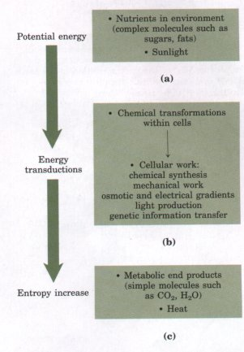
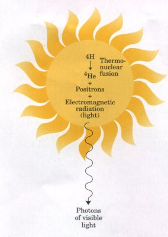
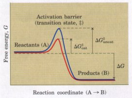
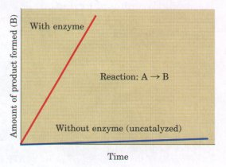
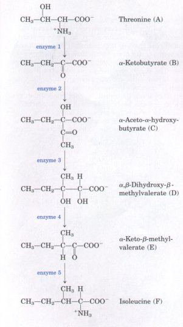

| The first law of thermodynamics,
developed from physics and chemistry but fully valid for
biological systems as well, describes the energy
conservation principle: In any physical or chemical change, the total amount of energy in the universe remains constant, although the form of the energy may change. Not until the nineteenth century did physicists discover that energy can be transduced (converted from one form to another), yet living cells have been using that principle for eons. Cells are consummate transducers of energy, capable of interconverting chemical, electromagnetic, mechanical, and osmotic energy with great efficiency (Fig. 1-7). Biological energy transducers differ from many familiar machines that depend on temperature or pressure differences. The steam engine, for example, converts the chemical energy of fuel into heat, raising the temperature of water to its boiling point to produce steam pressure that drives a mechanical device. The internal combustion engine, similarly, depends upon changes in temperature and pressure. By contrast, all parts of a living organism must operate at about the same temperature and pressure, and heat flow is therefore not a useful source of energy. Cells are isothermal, or constant-temperature, systems. Living cells are chemical engines that function at constant temperature. |
 Figure 1-7 During metabolic transductions, entropy increases as the potential energy of complex nutrient molecules decreases. Living organisms (a) extract energy from their environment, (b) convert some of it into useful forms of energy to produce work, and (c) return some energy to the environment as heat, together with end-product molecules that are less well organized than the starting fuel, increasing the entropy of the universe. |
| Virtually all of the energy
transductions in cells can be traced to a flow of
electrons from one molecule to another, in the oxidation
of fuel or in the trapping of light energy during
photosynthesis. This electron flow is
"downhill," from higher to lower
electrochemical potential; as such, it is formally
analogous to the flow of electrons in an electric circuit
driven by an electrical battery. Nearly all living
organisms derive their energy, directly or indirectly,
from the radiant energy of sunlight, which arises from
the thermonuclear fusion reactions that form helium in
the sun (Fig. 1-8). Photosynthetic cells absorb the sun's
radiant energy and use it to drive electrons from water
to carbon dioxide, forming energy-rich products such as
starch and sucrose. In doing so, most photosynthetic
organisms release molecular oxygen into the atmosphere.
Ultimately, nonphotosynthetic organisms obtain energy for
their needs by oxidizing the energy-rich products of
photosynthesis, passing electrons to atmospheric oxygen
to form water, carbon dioxide, and other end products,
which are recycled in the environment. All of these
reactions involving electron flow are oxidation-reduction
reactions. Thus, other principles of the living
state emerge: The energy needs of virtually all organisms are provided, directly or indirectly, by solar energy. The flow of electrons in oxidation-reduction reactions underlies energy transduction and energy conservation in living cells. All living organisms are dependent on each other through exchanges of energy and matter via the environment. |
 Figure 1-8 Sunlight is the ultimate source of all biological energy. Thermonuclear reactions in the sun produce energy that is transmitted to the earth as light and converted into chemical energy by plants and certain microorganisms. |
| The fact that a reaction is exergonic
does not mean that it will necessarily proceed rapidly.
The reaction coordinate diagram in Figure 1-6 (bottom) is
actually an oversimplification. The path from reactant to
product almost invariably involves an energy barrier,
called the activation barrier (Fig. 1-9), that must be
surmounted for any reaction to occur. The breaking and
joining of bonds generally requires the prior bending or
stretching of existing bonds, creating a transition
state of higher free energy than either reactant
or product. The highest point in the reaction coordinate
diagram represents the transition state. Activation barriers are crucial to the stability of biomolecules in living systems. Although, when isolated from other cellular components, most biomolecules are stable for days or even years, inside cells they often undergo chemical transformations within milliseconds. Without activation barriers, biomolecules within cells would rapidly break down to simple, low-energy forms. The lifetime of complex molecules would be very short, and the extraordinary continuity and organization of life would be impossible. Virtually every cellular chemical reaction occurs because of enzymes-catalysts that are capable of greatly enhancing the rate of specific chemical reactions without being consumed in the process (Fig. 1-10). Enzymes, as catalysts, act by lowering this energy barrier between reactant and product. The activation energy (ΔG#; Fig. 1-9) required to overcome this energy barrier could in principle be supplied by heating the reaction mixture, but this option is not available in living cells. Instead, during a reaction, enzymes bind reactant molecules in the transition state, thereby lowering the activation energy and enormously accelerating the rate of the reaction. The relationship between the activation energy and reaction rate is exponential; a small decrease in ΔG# results in a very large increase in reaction rate. Enzyme-catalyzed reactions commonly proceed at rates up to 1010- to 1014-fold greater than the uncatalyzed rates. Enzymes are, with a few exceptions we will consider later, proteins. Each enzyme protein is specific for the catalysis of a specific reaction, and each reaction in a cell is catalyzed by a different enzyme. Thousands of different types of enzymes are therefore required by each cell. The multiplicity of enzymes, their high specificity for reactants, and their susceptibility to regulation give cells the capacity to lower activation barriers selectively. This selectivity is crucial in the effective regulation of cellular processes. The thousands of enzyme-catalyzed chemical reactions in cells are functionally organized into many different sequences of consecutive reactions called pathways, in which the product of one reaction becomes the reactant in the next (Fig. 1-11). Some of these sequences of enzyme-catalyzed reactions degrade organic nutrients into simple end products, in order to extract chemical energy and convert it into a form useful to the cell. Together these degradative, free-energy-yielding reactions are designated catabolism. Other enzyme-catalyzed pathways start from small precursor molecules and convert them to progressively larger and more complex molecules, including proteins and nucleic acids; such synthetic pathways invariably require the input of energy, and taken together represent anabolism. The network of enzyme-catalyzed pathways constitutes cellular metabolism. |
 Figure 1-9 The energetic course of a chemical reaction. A high activation barrier, representing the transition state, must be overcome in the conversion of reactants (A) into products (B), even though the products are more stable than the reactantsas indicated by a large, negative free-energy change (ΔG). The energy required to overcome the activation barrier is the activation energy (ΔG#). Enzymes catalyze reactions by lowering the activation barrier. They bind the transition-state intermediates tightly, and the binding energy of this interaction efiectively reduces the activation energy from ΔG#uncat to ΔG#cat. (Note that the activation energy is unrelated to the free-energy change of the reaction, ΔG.)  Figure 1-10 An enzyme increases the rate of a specific chemical reaction. In the presence of an enzyme specific for the conversion of reactant A into product B, the rate of the reaction may increase a millionfold or more over that of the uncatalyzed reaction. The enzyme is not consumed in the process; one enzyme molecule can act repeatedly to convert many molecules of A to B.  Figure 1-11 An example of a typical synthetic (anabolic) pathway. In the bacterium E. coli, threonine is converted to isoleucine in five steps, each catalyzed by a separate enzyme. (Only the main reactants and products are shown here.) Threonine, in turn, was synthesized from a simpler precursor. Both threonine and isoleucine are precursors of much larger and more complex molecules: the proteins. (The letters A to F correspond to those in Fig. 1-14. ) |